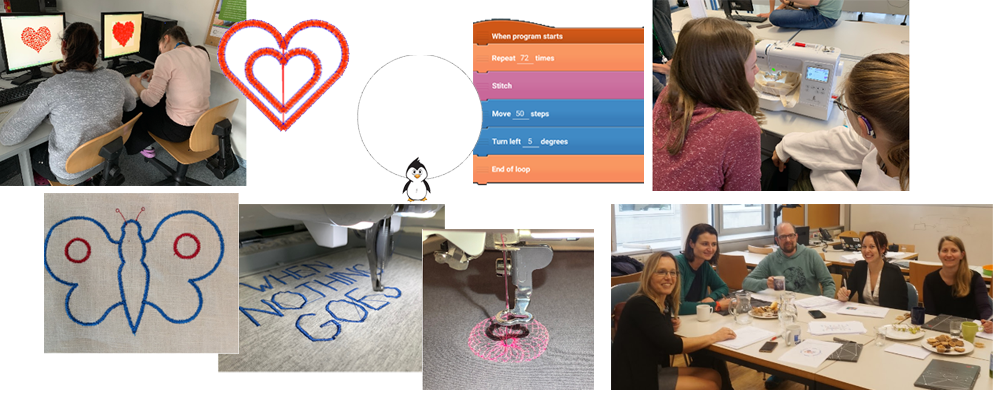

FEMtech Projekt "Code'n'Stitch"
Weiterentwicklung der Pocket Code App für den Einsatz in gendergerechten Stick/Coding Kurse für Werken
Laufzeit: September 2018 - August 2020 (24 Monate)
Konsortium:
Technische Universität Graz, Institut für Softwaretechnologie, Catrobat.org
bits4kids OG
Apflbutzn Faires Gwand OG
Bereich:
Experimentelle Entwicklung (EE)
Digitale Technologien – Informations- & Kommunikationstechnologien
Projektziel
Frauen stellen die Personengruppe mit dem größten Potential dar, den in den nächsten Jahren kommenden dramatischen Rückgang bei der arbeitenden österreichischen Bevölkerung zu kompensieren und den damit extrem auseinanderklaffenden und ungebremst wachsenden Bedarf an IT-Fachkräften bewältigen zu können. Mit unserer Lernapp Pocket Code bieten wir einen kreativen Ansatz für Jugendliche und können den Zugang zur IT für sie spielerisch eröffnen. Mit einer neuen Version der Pocket Code App, durch die Erweiterung einer programmierbaren Stickmaschine erschließen wir neue Möglichkeiten vor allem Schülerinnen für die Technik zu begeistern. Gemeinsam mit unseren Kooperationspartnern können wir den gesamten Workflow vom Einsatz an Schulen, bis zur Entwicklung gendergerechte Guidelines für Workshops in Werken und die praktische Umsetzung für Modegeschäfte abbilden. Dieses nachhaltige Konzept wird dazu beitragen die Kreativität der Jugendlichen zu fördern, sie für Coding zu begeistern, und sie haben am Ende dieser “Hands-on”-Stick Einheiten etwas Selbstkreiertes, das sie mit Stolz anziehen und herzeigen können.
Projekt-Kurzfassung
Die App Pocket Code wird an der Technischen Universität in Graz am Institut für Softwaretechnologie als Open Source Projekt realisiert. Mit Pocket Code können Jugendliche spielerisch Programme direkt am eigenen Smartphone erstellen. Um die App für die Zielgruppe junge Frauen im Alter von 12-15 Jahre interessanter zu gestalten, werden wir sie um die Möglichkeit eine Stickmaschine zu programmieren, erweitern. So können selbst kreierte Muster und Designs zum Beispiel auf T-Shirts, Hosen oder Taschen aufgestickt werden. Die Stickmuster werden mit Pocket Codes‘ visuellen Programmiersprache erstellt und dann via USB Stick auf die Maschine geladen. Als Resultat haben die Jugendlichen dann etwas Bleibendes, zum Beispiel zum Anziehen, das sie anderen zeigen können. Für diese Stickmusteranbindung soll eine neue Version der Pocket Code App entwickelt werden, welche speziell auf die Interessen junger Frauen und Mädchen zugeschnitten ist. Des Weiteren sollen entsprechende Stick/Coding Kurse an Schulen angeboten werden wobei besonders Wert auf eine gendergerechte Konzeption gelegt werden soll, um die unterschiedlichen Voraussetzungen, Bedürfnissen und Lebensperspektiven von Jugendlichen besser im Unterricht berücksichtigen zu können. Diese Kurse werden im Werkunterricht gemeinsam mit den Projektpartnern „bits4kids“ realisiert. Diese Kurse sollen zum einen jungen Frauen neue Wege aufzeigen, wie Technik eingesetzt werden kann, und zum anderen junge Männer durch programmierte Musterbildung für einen textilen Werkunterricht begeistern. Durch die Kooperation mit der Modefirma “Apflbutzn”, wird das Besticken der Kleidung verwirklicht. Dafür wird ihr Team bei den letzten Einheiten mit einer Stickmaschine dabei sein und die programmierten Muster der Jugendlichen können direkt vor Ort auf T-Shirts und Turnbeutel gestickt werden.
